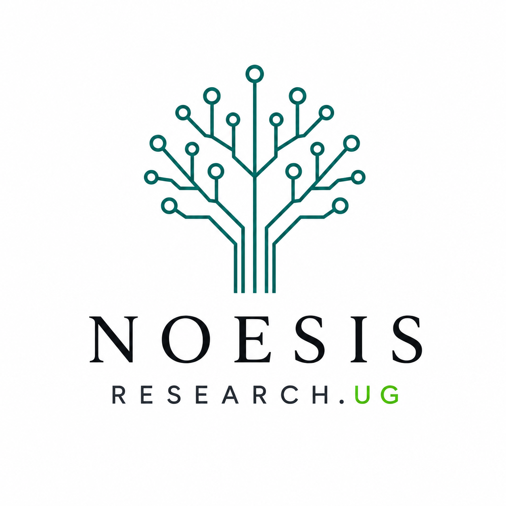

Noesis Research.UG
Student-led undergraduate research initiative
Founded, along with co-founder Chhavi Akansha Singh, a student-led non-profit organization for undergraduate research, focusing on expanding access to mentorship and funding in the electrical sciences.